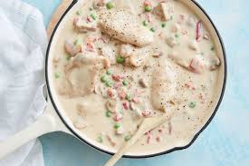

Chicken a la King

Description
A creamy chicken dinner fit for a king! It-s done in just 30 minutes and in one pot.
Soak some pasta or rice...for more flavor!
Ingredients
- 1 tbsp vegetable oil
- 500g chicken thighs, cut into 3 pieces
- 1 small onion, finely chopped
- 200g brown mushrooms, quartered
- 60g butter
- 50g flour
- 1/2 cup white wine
- 250ml chicken stock
- 300ml cooking cream
- 1 cup of peas
- 100g chargrilled capsicum, finelly chopped
- Cooked rice or fettucini pasta, to serve
Step by step
- Heat oil in a large, deep frying pan over a medium high heat. Add chicken. Cook for 3-4
minutes until browned on all sides. Transfer to a plate.
- Add onions to pan. Cook for 1-2 minutes or until softened. Add mushrooms. Cook, stirring
occasionally, for 2-3 minutes. Transfer to chicken on plate.
- Heat butter in pan until foaming. Add flour. Stir to form a paste. Cook for 1-2 minutes or until golden in colour.
Add wine and stock. Whisk until smooth. Whisk in cream. Return chicken and mushrooms to pan with peas.
Simmer, stirring occasionally, for 5 minutes. Stir in capsicum and remove from heat.
- Serve with cooked rice or fettucini pasta.